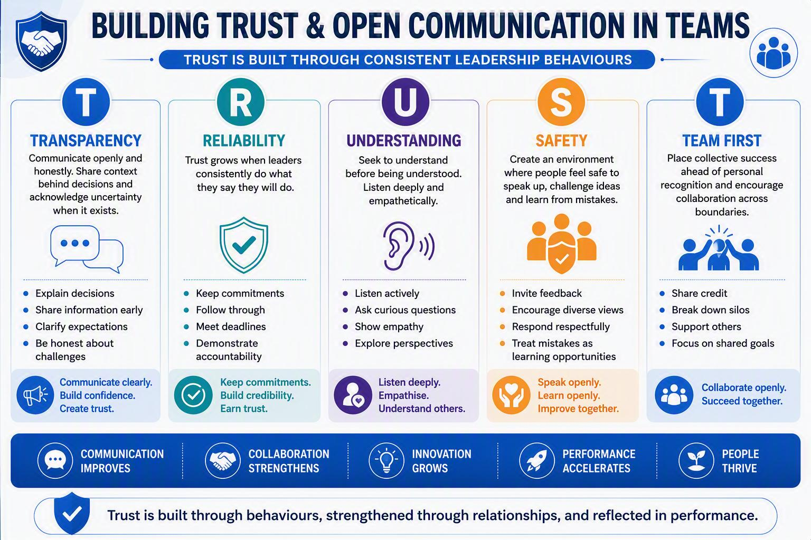
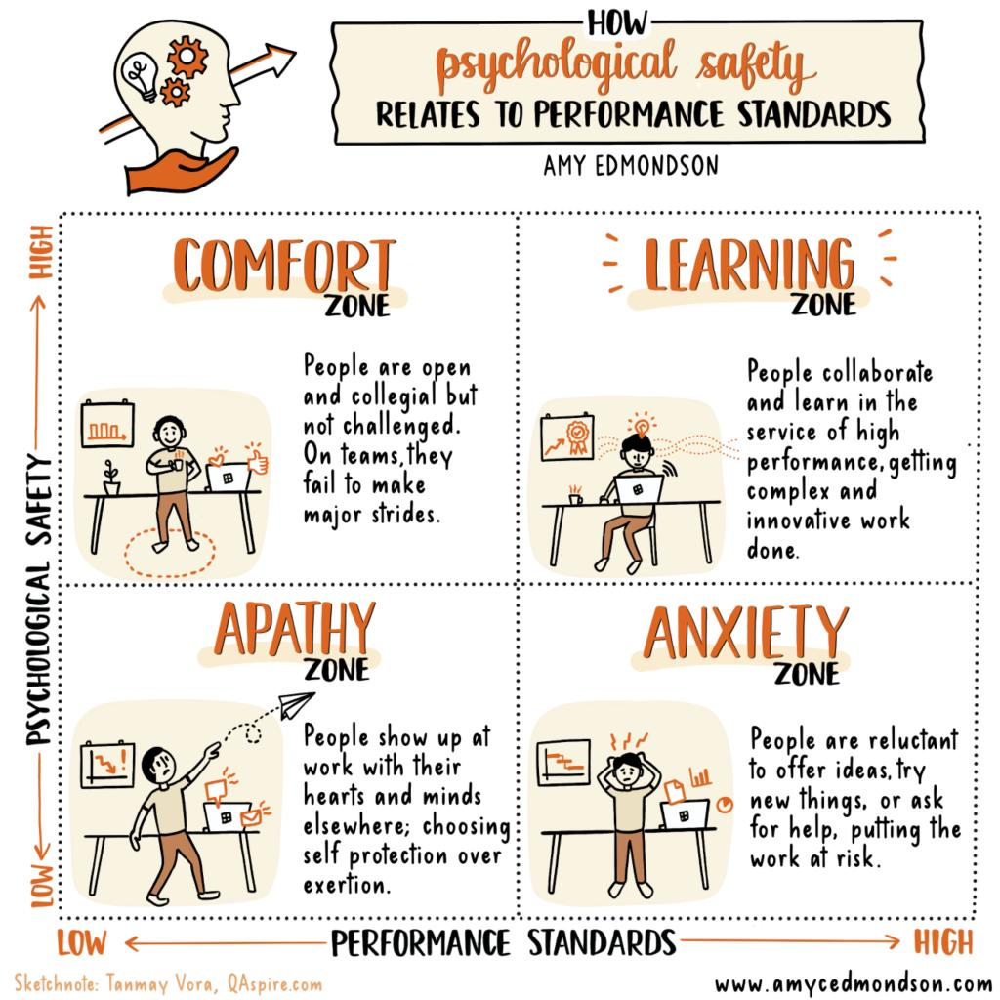
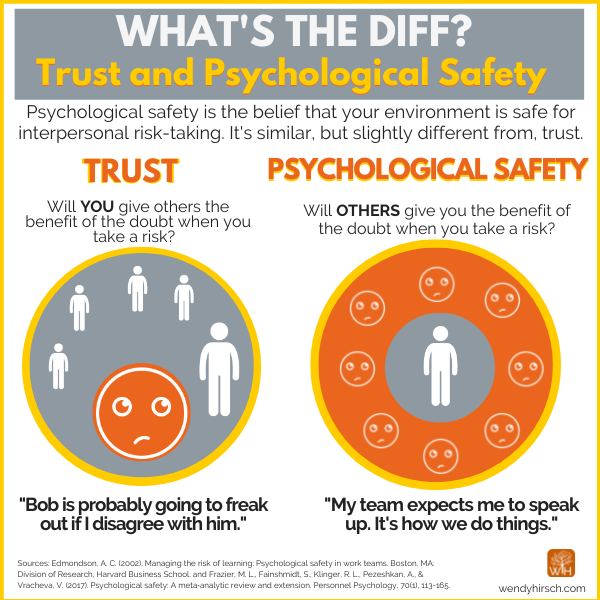
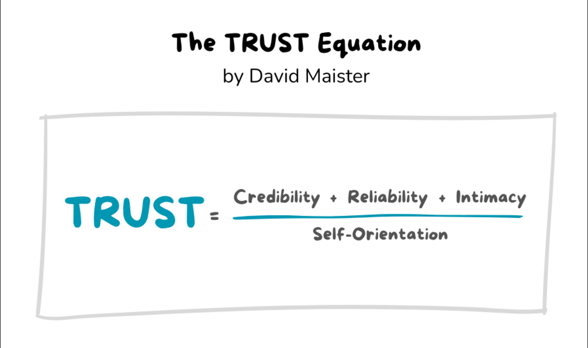
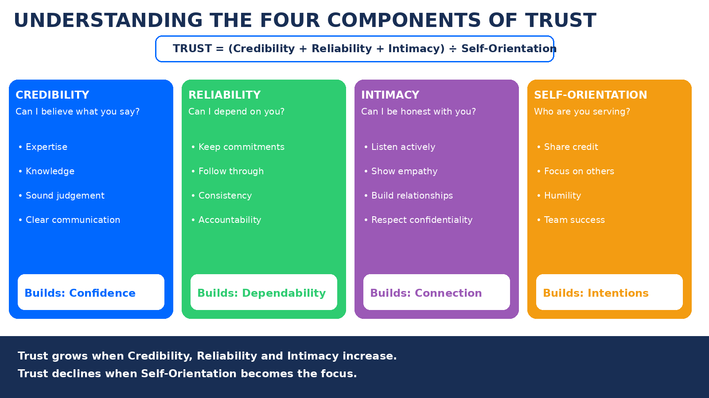
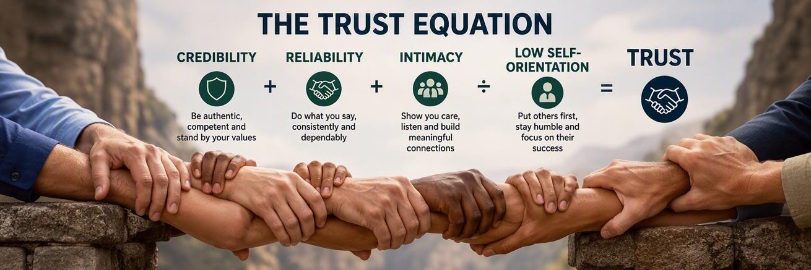
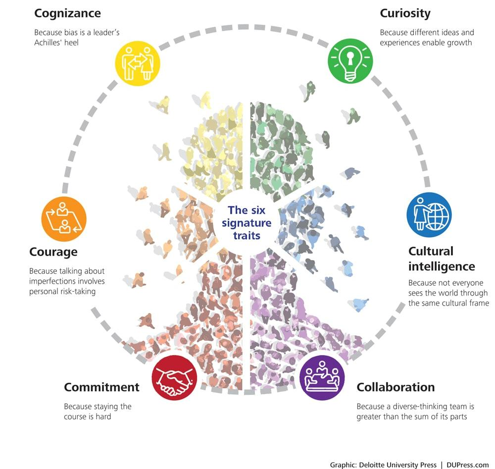

Chủ đề 13: Xây dựng niềm tin & giao tiếp cởi mở trong đội nhóm
Building Trust & Open Communication in Teams — bản đối chiếu Anh – Việt
TS. Justin Xavier · 30 slide
Quy ước của bản dịch. Mỗi slide là một khối: cột bên trái là nguyên văn tiếng Anh (màu xám), cột bên phải là bản tiếng Việt (màu đen). Nội dung được dịch sát theo từng slide, không lược bỏ. Chữ nằm trong hình đồ hoạ của slide cũng được dịch. Khẩu hiệu “Ready for what’s next” và logo RMIT lặp lại ở chân mọi slide nên không nhắc lại. Số slide theo thứ tự trang của file PDF.
Phần mô tả hình ảnh và các ghi chú về slide gốc được ghi bằng chữ nghiêng màu xám. Các khung “Giải thích thêm” và phần “Gợi ý trả lời” cho tình huống ở slide 26 do bản dịch bổ sung, không có trên slide gốc.
Tên riêng, tên mô hình và trích dẫn nguồn giữ nguyên. Psychological safety là “an toàn tâm lý”; Trust Equation là “Phương trình niềm tin”; Inclusive Leadership là “lãnh đạo hoà nhập”. Khung TRUST: Transparency – “Minh bạch”, Reliability – “Đáng tin cậy”, Understanding – “Thấu hiểu”, Safety – “An toàn”, Team First – “Đội nhóm trên hết”. Phương trình niềm tin: Credibility – “Uy tín”, Reliability – “Độ tin cậy”, Intimacy – “Sự gần gũi”, Self-Orientation – “Mức độ vị kỷ”. Bốn vùng của Edmondson: Comfort – “Thoải mái”, Learning – “Học hỏi”, Apathy – “Thờ ơ”, Anxiety – “Lo âu”.
Building Trust & Open Communication In Teams
Xây dựng niềm tin & giao tiếp cởi mở trong đội nhóm
Slide bìa có logo RMIT.
Screen: “Building Trust & Open Communication in Teams” — Trust · Respect · Inclusion · Collaboration · Growth — “Stronger Communication. Stronger Teams. Better Results.”
Flipchart: “What builds trust?” — Keep commitments · Be consistent · Communicate openly · Show empathy · Give credit · Follow through
Banner: “Great teams are built on trust and open communication.”
Table card: “Our team norms” — Listen actively · Be respectful · Challenge ideas, not people · Assume good intent · Share the air · Own & learn
Màn hình: “Xây dựng niềm tin & giao tiếp cởi mở trong đội nhóm” — Niềm tin · Tôn trọng · Hoà nhập · Hợp tác · Phát triển — “Giao tiếp tốt hơn. Đội nhóm mạnh hơn. Kết quả tốt hơn.”
Bảng giấy: “Điều gì xây dựng niềm tin?” — Giữ cam kết · Nhất quán · Giao tiếp cởi mở · Thể hiện sự thấu cảm · Ghi nhận công lao · Làm đến nơi đến chốn
Băng rôn: “Đội nhóm xuất sắc được xây dựng trên niềm tin và giao tiếp cởi mở.”
Thẻ trên bàn: “Chuẩn mực của nhóm chúng ta” — Lắng nghe tích cực · Tôn trọng · Phản biện ý tưởng, không công kích con người · Giả định thiện ý · Chia sẻ cơ hội phát biểu · Nhận trách nhiệm & học hỏi
Slide chỉ có một bức ảnh: một nhóm đang thảo luận quanh bàn, người hướng dẫn đứng cạnh bảng giấy; trên tường có bảng “Inclusive Leadership” và bảng ghi chú “How can we support each other?” (Chúng ta có thể hỗ trợ nhau thế nào?).
What we will cover
Nội dung chúng ta sẽ đề cập
- Why Trust Matters
- Building Trust
- Psychological Safety
- Trust Equation
- Inclusive Leadership
- Application
- Vì sao niềm tin quan trọng
- Xây dựng niềm tin
- An toàn tâm lý
- Phương trình niềm tin
- Lãnh đạo hoà nhập
- Ứng dụng
Kèm hai ảnh minh hoạ. Dòng “Ready for what’s next” ở chân slide là khẩu hiệu của RMIT, lặp lại trên mọi slide.
What we expect to learn
Những gì chúng ta kỳ vọng sẽ học được
- Apply psychological safety principles
- Build trust through leadership behaviours and foster inclusive communication
- Create team norms that encourage speaking up and collaboration
- Áp dụng các nguyên tắc an toàn tâm lý
- Xây dựng niềm tin thông qua hành vi lãnh đạo và thúc đẩy giao tiếp hoà nhập
- Tạo ra các chuẩn mực nhóm khuyến khích lên tiếng và hợp tác
PART 1: Why TRUST Matters
PHẦN 1: Vì sao NIỀM TIN quan trọng
Why TRUST Matters
Vì sao NIỀM TIN quan trọng
- Trust is more than a positive workplace feeling → critical organisational asset that shapes how people communicate, collaborate and perform.
- Niềm tin không chỉ là một cảm giác tích cực nơi làm việc → đó là tài sản quan trọng của tổ chức, định hình cách mọi người giao tiếp, hợp tác và làm việc.
- Share ideas and raise concerns openly.
- Collaborate across teams and functions.
- Take initiative without waiting for direction.
- Admit mistakes and learn from them.
- Support organisational change and innovation.
- Chia sẻ ý tưởng và nêu ra mối lo ngại một cách cởi mở.
- Hợp tác giữa các nhóm và các bộ phận.
- Chủ động hành động mà không chờ chỉ đạo.
- Thừa nhận sai lầm và học hỏi từ đó.
- Ủng hộ thay đổi và đổi mới trong tổ chức.
- Remain silent during meetings.
- Avoid difficult conversations.
- Withhold information or feedback.
- Focus on self-protection rather than team success.
- Resist change and innovation.
- Im lặng trong các cuộc họp.
- Né tránh những cuộc trò chuyện khó.
- Giữ lại thông tin hoặc phản hồi.
- Tập trung tự bảo vệ mình thay vì thành công của nhóm.
- Chống lại thay đổi và đổi mới.
- Managers influence trust every day through their behaviours, decisions and communication practices.
- Trust is not built through authority or position, but it is earned through consistent actions over time.
- Người quản lý tác động đến niềm tin mỗi ngày thông qua hành vi, quyết định và cách giao tiếp của mình.
- Niềm tin không được xây dựng bằng quyền hạn hay chức vụ, mà phải được tạo dựng qua những hành động nhất quán theo thời gian.
Why TRUST Matters — Trust is NOT a soft skill → Business performance driver
Vì sao NIỀM TIN quan trọng — Niềm tin KHÔNG phải kỹ năng mềm → mà là động lực của hiệu quả kinh doanh
Employees remain silent even when they have concerns.
Common behaviours:
- Information is withheld or delayed
- Employees fear making mistakes
- Teams operate in silos
- Decisions are slower
- Blame is common
- Engagement declines
- People resist change
Nhân viên im lặng ngay cả khi có điều lo ngại.
Hành vi thường gặp:
- Thông tin bị giữ lại hoặc chậm trễ
- Nhân viên sợ mắc sai lầm
- Các nhóm làm việc tách biệt
- Ra quyết định chậm hơn
- Đổ lỗi là chuyện thường
- Mức độ gắn kết giảm
- Mọi người chống lại thay đổi
Employees communicate openly and contribute ideas.
Common behaviours:
- Knowledge is shared freely
- Learning is encouraged
- Teams collaborate effectively
- Decisions are faster
- Accountability increases
- Engagement improves
- Innovation flourishes
Nhân viên giao tiếp cởi mở và đóng góp ý tưởng.
Hành vi thường gặp:
- Kiến thức được chia sẻ tự do
- Việc học hỏi được khuyến khích
- Các nhóm hợp tác hiệu quả
- Ra quyết định nhanh hơn
- Tinh thần trách nhiệm tăng
- Mức độ gắn kết cải thiện
- Đổi mới phát triển mạnh
Hai cột “Low Trust” và “High Trust” đặt hai bên một vòng tròn ở giữa.
Why TRUST Matters — TRUST in fast-growth organisations
Vì sao NIỀM TIN quan trọng — NIỀM TIN trong các tổ chức tăng trưởng nhanh
- Teams become larger and more geographically dispersed
- New employees join without established relationships
- Decision-making is pushed closer to the front line
- Cross-functional collaboration becomes more important
- Change occurs more frequently and at a faster pace
- Các nhóm lớn hơn và phân tán về địa lý hơn
- Nhân viên mới gia nhập khi chưa có các mối quan hệ sẵn có
- Việc ra quyết định được đẩy xuống gần tuyến đầu hơn
- Hợp tác liên chức năng trở nên quan trọng hơn
- Thay đổi diễn ra thường xuyên hơn và nhanh hơn
- Communication breakdowns
- Information silos
- Slower decision-making
- Reduced collaboration
- Resistance to change
- Lower innovation
- Đứt gãy trong giao tiếp
- Thông tin bị cô lập
- Ra quyết định chậm hơn
- Hợp tác giảm sút
- Chống lại thay đổi
- Đổi mới thấp hơn
- Faster execution
- Greater ownership
- Better collaboration
- Higher engagement
- More innovation
- Improved adaptability
- Thực thi nhanh hơn
- Tinh thần làm chủ cao hơn
- Hợp tác tốt hơn
- Gắn kết cao hơn
- Đổi mới nhiều hơn
- Khả năng thích ứng tốt hơn
PART 2: Building TRUST
PHẦN 2: Xây dựng NIỀM TIN
TRUST Framework
Khung TRUST
Slide 10–12 hiện dần cùng một hình đồ hoạ: slide 10 chỉ có phần đầu với năm chữ cái T – R – U – S – T; slide 11 hiện thêm năm cột; slide 12 là toàn bộ hình. Nội dung đầy đủ được dịch ở slide 12.
TRUST Framework
Khung TRUST
Tiêu đề “TRUST Framework” đặt trong một vòng tròn bên trái; hình đồ hoạ được cắt ở phần trên. Xem bản dịch đầy đủ ở slide 12.
Building Trust & Open Communication in Teams
Xây dựng niềm tin & giao tiếp cởi mở trong đội nhóm
- Explain decisions
Giải thích quyết định - Share information early
Chia sẻ thông tin sớm - Clarify expectations
Làm rõ kỳ vọng - Be honest about challenges
Trung thực về khó khăn
- Keep commitments
Giữ cam kết - Follow through
Làm đến nơi đến chốn - Meet deadlines
Đúng hạn - Demonstrate accountability
Thể hiện tinh thần trách nhiệm
- Listen actively
Lắng nghe tích cực - Ask curious questions
Đặt câu hỏi với sự tò mò - Show empathy
Thể hiện sự thấu cảm - Explore perspectives
Tìm hiểu các góc nhìn
- Invite feedback
Mời góp ý - Encourage diverse views
Khuyến khích quan điểm đa dạng - Respond respectfully
Phản hồi một cách tôn trọng - Treat mistakes as learning opportunities
Xem sai lầm là cơ hội học hỏi
- Share credit
Chia sẻ công lao - Break down silos
Phá bỏ sự cô lập giữa các nhóm - Support others
Hỗ trợ người khác - Focus on shared goals
Tập trung vào mục tiêu chung

Giải thích thêm
Khung TRUST biến niềm tin thành năm nhóm hành vi quan sát được. Mỗi chữ cái trả lời một câu hỏi mà nhân viên tự đặt ra về người lãnh đạo: Tôi có được biết điều gì đang diễn ra không (Minh bạch)? Lời hứa có được giữ không (Đáng tin cậy)? Tôi có được lắng nghe không (Thấu hiểu)? Nói ra có an toàn không (An toàn)? Người lãnh đạo vì nhóm hay vì bản thân (Đội nhóm trên hết)?
Khung này được dùng lại trong hoạt động ở slide 20 và trong câu hỏi số 3 của tình huống ở slide 26.
PART 3: Psychological Safety
PHẦN 3: An toàn tâm lý
Psychological Safety
An toàn tâm lý
Slide gồm bìa sách, hai thẻ trích dẫn và một bản sketchnote tóm tắt cuốn sách với các cụm từ như “fear” (nỗi sợ), “culture of silence = dangerous culture” (văn hoá im lặng = văn hoá nguy hiểm), “it’s not being nice” (không phải là dễ dãi), “lowering standards” (hạ thấp chuẩn mực), “candor” (thẳng thắn), “learning, engagement, performance” (học hỏi, gắn kết, hiệu suất) và “trust” (niềm tin). Chữ trong sketchnote quá nhỏ để dịch đầy đủ.
Psychological Safety
An toàn tâm lý
Slide là ảnh thu nhỏ của một video Harvard Business Review, có Amy Edmondson xuất hiện. Nội dung video không có trong file PDF.
Psychological Safety
An toàn tâm lý
Psychological safety is the belief that your environment is safe for interpersonal risk-taking. It’s similar, but slightly different from, trust.
An toàn tâm lý là niềm tin rằng môi trường của bạn an toàn để chấp nhận rủi ro trong quan hệ giữa người với người. Nó gần giống, nhưng hơi khác so với niềm tin.
“Bob is probably going to freak out if I disagree with him.”
“Chắc Bob sẽ nổi đoá nếu mình không đồng ý với anh ấy.”
“My team expects me to speak up. It’s how we do things.”
“Nhóm của tôi mong tôi lên tiếng. Đó là cách chúng tôi làm việc.”


Giải thích thêm
Ma trận của Edmondson cho thấy an toàn tâm lý không có nghĩa là hạ thấp yêu cầu. Nhóm chỉ vào được Vùng học hỏi khi có cả hai: chuẩn mực cao và an toàn để lên tiếng. Chuẩn mực cao mà thiếu an toàn sẽ đẩy nhóm vào Vùng lo âu: mọi người vẫn cố gắng nhưng giấu vấn đề.
Sự khác biệt giữa hai khái niệm nằm ở hướng nhìn. Niềm tin là cách tôi nhìn một người cụ thể. An toàn tâm lý là điều tôi tin về cách cả nhóm sẽ phản ứng khi tôi lên tiếng, nên nó là đặc điểm của nhóm chứ không của từng cá nhân.
PART 4: Trust Equation
PHẦN 4: Phương trình niềm tin
How do people decide whether to Trust us?
Mọi người quyết định có tin chúng ta hay không bằng cách nào?

Bên cạnh là ảnh một nhóm đang họp, trên bảng trắng có “Team norms” (chuẩn mực nhóm) và các ghi chú Keep doing / Start doing / Stop doing. Slide gốc còn sót dòng chữ mẫu “Body text here”.
Trust Equation — Understanding the Four Components of Trust
Phương trình niềm tin — Hiểu bốn thành phần của niềm tin
- Expertise
Chuyên môn - Knowledge
Kiến thức - Sound judgement
Phán đoán vững vàng - Clear communication
Giao tiếp rõ ràng
Tạo ra: Sự tự tin
- Keep commitments
Giữ cam kết - Follow through
Làm đến nơi đến chốn - Consistency
Nhất quán - Accountability
Tinh thần trách nhiệm
Tạo ra: Sự đáng trông cậy
- Listen actively
Lắng nghe tích cực - Show empathy
Thể hiện sự thấu cảm - Build relationships
Xây dựng mối quan hệ - Respect confidentiality
Tôn trọng tính bảo mật
Tạo ra: Sự kết nối
- Share credit
Chia sẻ công lao - Focus on others
Tập trung vào người khác - Humility
Khiêm tốn - Team success
Thành công của nhóm
Tạo ra: Thiện ý

Giải thích thêm
Phương trình gồm ba yếu tố cộng ở tử số và một yếu tố chia ở mẫu số. Vì vậy mức độ vị kỷ cao có thể xoá đi phần lớn những gì uy tín, độ tin cậy và sự gần gũi đã tạo ra: một người giỏi chuyên môn và luôn đúng hạn vẫn khó được tin nếu người khác cảm thấy họ chủ yếu làm vì bản thân.
Intimacy ở đây không mang nghĩa quan hệ riêng tư. Nó chỉ mức độ một người cảm thấy an toàn khi nói thật, chia sẻ lo ngại hoặc thông tin nhạy cảm với bạn. Phương trình xuất phát từ cuốn The Trusted Advisor (Maister, Green & Galford, 2000).
Activity
Hoạt động

Slide kèm lại hình đồ hoạ khung TRUST (xem slide 12) để người học chọn năm hành vi cần cải thiện. Năm dòng trống để người học tự điền.
PART 5: Inclusive Leadership
PHẦN 5: Lãnh đạo hoà nhập
Inclusive Leadership — 6 Signature Traits of An Inclusive Leader
Lãnh đạo hoà nhập — 6 đặc điểm nổi bật của nhà lãnh đạo hoà nhập

Giải thích thêm
Sáu đặc điểm đến từ nghiên cứu của Juliet Bourke và Bernadette Dillon tại Deloitte (2016), thường được gọi là “6C”. Hai slide tiếp theo chia chúng thành hai nhóm: Nhận thức, Tò mò, Hợp tác để khai thác các góc nhìn đa dạng (slide 23), và Trí tuệ văn hoá, Can đảm, Cam kết để giao tiếp với nhiều phong cách làm việc khác nhau (slide 24).
Inclusive Leadership — Managing Diverse Perspectives
Lãnh đạo hoà nhập — Quản lý các góc nhìn đa dạng
- Check the Mirror: Actively identify your own blind spots to prevent favouritism.
- Build Fair Processes: Set structured, data-driven rules so every voice gets an objective hearing.
- Soi gương: Chủ động nhận ra điểm mù của chính mình để tránh thiên vị.
- Xây dựng quy trình công bằng: Đặt ra quy tắc có cấu trúc, dựa trên dữ liệu để mọi tiếng nói đều được lắng nghe khách quan.
- Listen to Learn: Practice active listening instead of listening just to reply or judge.
- Seek Friction: Comfortably sit with ambiguity and welcome respectful pushback.
- Nghe để học: Thực hành lắng nghe tích cực thay vì nghe chỉ để đáp lại hay phán xét.
- Tìm đến sự cọ xát: Thoải mái chấp nhận sự mơ hồ và đón nhận ý kiến phản bác một cách tôn trọng.
- Ensure Psychological Safety: Create a culture where people can speak up without fear of negative consequences.
- Design for Diversity: Purposely mix team composition to break down silos and cliquey subgroups.
- Bảo đảm an toàn tâm lý: Tạo văn hoá nơi mọi người có thể lên tiếng mà không sợ hậu quả tiêu cực.
- Thiết kế cho sự đa dạng: Chủ ý pha trộn thành phần nhóm để phá bỏ sự cô lập và các nhóm nhỏ khép kín.
Inclusive Leadership — Communication Across Different Work Styles
Lãnh đạo hoà nhập — Giao tiếp với các phong cách làm việc khác nhau
- Flex Your Approach: Learn how your team members prefer to receive information (e.g., direct vs. indirect, written vs. verbal).
- Check Assumptions: Recognize that your own communication style is not the “default” or only right way to work.
- Linh hoạt cách tiếp cận: Tìm hiểu thành viên trong nhóm thích nhận thông tin theo cách nào (ví dụ: trực tiếp hay gián tiếp, bằng văn bản hay bằng lời).
- Kiểm tra giả định: Nhận ra rằng phong cách giao tiếp của bạn không phải là “mặc định” hay cách làm việc đúng duy nhất.
- Invite Vulnerability: Model deep humility by admitting when you don’t have all the answers, opening the door for others to speak up.
- Address Misalignment: Gently but directly address communication friction before it turns into conflict.
- Mời gọi sự cởi mở: Làm gương về sự khiêm tốn bằng cách thừa nhận khi mình không có mọi câu trả lời, mở đường cho người khác lên tiếng.
- Xử lý sự lệch nhau: Nhẹ nhàng nhưng thẳng thắn giải quyết những va chạm trong giao tiếp trước khi chúng thành xung đột.
- Set Clear Team Norms: Establish collective rules for meetings, deadlines, and updates to accommodate different paces.
- Unify the Group: Focus on shared, common goals to prevent the team from fracturing into communication silos.
- Đặt chuẩn mực nhóm rõ ràng: Thống nhất quy tắc chung cho cuộc họp, thời hạn và cập nhật công việc để phù hợp với nhịp độ khác nhau của mỗi người.
- Gắn kết cả nhóm: Tập trung vào mục tiêu chung để nhóm không bị chia cắt thành những ốc đảo giao tiếp.
PART 6: Application
PHẦN 6: Ứng dụng
Application Activity — Case Study: The Silent Team
Hoạt động ứng dụng — Tình huống: Nhóm im lặng
- Team members rarely challenge ideas during meetings.
- Most discussions are dominated by two senior employees.
- Several mistakes have only been identified at the last minute.
- Employees often discuss concerns privately after meetings rather than raising them openly.
- Newer team members contribute very little.
- One team member recently told HR: “It is easier to remain quiet than risk saying the wrong thing.”
- Các thành viên hiếm khi phản biện ý tưởng trong cuộc họp.
- Phần lớn cuộc thảo luận do hai nhân viên kỳ cựu chi phối.
- Một số sai sót chỉ được phát hiện vào phút chót.
- Nhân viên thường bàn riêng về các mối lo ngại sau cuộc họp thay vì nêu ra công khai.
- Các thành viên mới hầu như không đóng góp.
- Một thành viên gần đây nói với HR: “Im lặng thì dễ hơn là liều nói sai.”
- What warning signs suggest that trust may be low within this team? Identify at least three.
- Using Amy Edmondson’s framework, which zone is this team likely operating in? Apathy; Anxiety; Comfort; Learning Zone. Why?
- Which TRUST behaviour requires the most immediate attention? Transparency; Reliability; Understanding; Safety; Team First. Explain your reasoning.
- Looking at the Trust Equation, which component appears weakest? Credibility; Reliability; Intimacy; Self-Orientation. Why?
- If you were Linh, what three specific actions would you take in the next 30 days?
- Những dấu hiệu cảnh báo nào cho thấy niềm tin trong nhóm này có thể đang thấp? Nêu ít nhất ba dấu hiệu.
- Theo mô hình của Amy Edmondson, nhóm này nhiều khả năng đang ở vùng nào: Thờ ơ, Lo âu, Thoải mái hay Học hỏi? Vì sao?
- Hành vi nào trong khung TRUST cần được chú ý ngay nhất: Minh bạch, Đáng tin cậy, Thấu hiểu, An toàn hay Đội nhóm trên hết? Giải thích lý do.
- Dựa vào Phương trình niềm tin, thành phần nào có vẻ yếu nhất: Uy tín, Độ tin cậy, Sự gần gũi hay Mức độ vị kỷ? Vì sao?
- Nếu bạn là Linh, bạn sẽ thực hiện ba hành động cụ thể nào trong 30 ngày tới?
Bản gốc dùng lẫn “she” và “he” cho Linh trong cùng một đoạn; bản dịch gọi là “Linh” để giữ trung tính.
Gợi ý trả lời · Suggested answers
Phần này do bản dịch bổ sung, không có trên slide gốc. Đây là quan điểm của người biên soạn, dùng để tham khảo và mở đầu thảo luận, không phải đáp án duy nhất.
The case lists six, and any three answer the question: ideas are rarely challenged; two senior employees dominate; mistakes surface only at the last minute; concerns are discussed privately after meetings instead of in them; newer members contribute very little; and one member told HR it is “easier to remain quiet than risk saying the wrong thing”. A seventh sign is Linh’s own view. She believes the environment is open, but the team’s behaviour says otherwise, so the leader’s perception and the team’s experience do not match.
Tình huống nêu sáu dấu hiệu, chọn ba bất kỳ là đủ: hiếm khi có ai phản biện ý tưởng; hai nhân viên kỳ cựu chiếm phần lớn cuộc thảo luận; sai sót chỉ lộ ra vào phút chót; mối lo ngại được bàn riêng sau cuộc họp thay vì trong cuộc họp; thành viên mới hầu như không đóng góp; và một thành viên nói với HR rằng “im lặng dễ hơn là liều nói sai”. Dấu hiệu thứ bảy là chính nhận định của Linh. Linh tin môi trường đã cởi mở, nhưng hành vi của nhóm cho thấy điều ngược lại, nghĩa là cảm nhận của người lãnh đạo và trải nghiệm của nhóm không khớp nhau.
Most likely the Anxiety Zone. Performance standards are high: an experienced, technically strong team must deliver a major new product in six months. Psychological safety is low: people stay quiet, and problems appear late. Apathy is less likely because people clearly still care; they talk about their concerns after meetings. They have not stopped caring, they have stopped speaking up in the meeting.
Nhiều khả năng là Vùng lo âu. Chuẩn mực hiệu suất cao: một nhóm giàu kinh nghiệm, giỏi kỹ thuật phải ra mắt một sản phẩm lớn trong sáu tháng. An toàn tâm lý thấp: mọi người im lặng, vấn đề lộ ra muộn. Vùng thờ ơ ít khả năng hơn vì mọi người rõ ràng vẫn quan tâm; họ vẫn bàn về các lo ngại sau cuộc họp. Họ không hết quan tâm, họ chỉ thôi lên tiếng trong cuộc họp.
Safety. The core problem is that speaking up feels risky. Information is not missing (Transparency) and promises are not being broken (Reliability). The Safety behaviours match the symptoms directly: invite feedback, encourage diverse views, respond respectfully and treat mistakes as learning. Team First is a close second, because the two dominant seniors and the silent newcomers suggest the group is not operating as one team.
An toàn. Vấn đề cốt lõi là lên tiếng bị xem là rủi ro. Thông tin không thiếu (Minh bạch) và lời hứa không bị phá vỡ (Đáng tin cậy). Các hành vi của yếu tố An toàn khớp trực tiếp với triệu chứng: mời góp ý, khuyến khích quan điểm đa dạng, phản hồi tôn trọng và xem sai lầm là cơ hội học hỏi. Đội nhóm trên hết đứng thứ hai, vì việc hai người kỳ cựu lấn át và người mới im lặng cho thấy nhóm chưa vận hành như một khối thống nhất.
Intimacy, defined on slide 19 as “Can I be honest with you?”. Team members do not feel safe being honest in front of Linh and their colleagues. Credibility and Reliability are not in question in the case. Self-Orientation is worth checking: Linh is frustrated and sure she has already created an open environment. If the team reads that as concern for her own image rather than for them, it will lower trust further.
Sự gần gũi, được định nghĩa ở slide 19 là “Tôi có thể thành thật với bạn không?”. Các thành viên không cảm thấy an toàn để nói thật trước mặt Linh và đồng nghiệp. Uy tín và Độ tin cậy không bị đặt vấn đề trong tình huống. Mức độ vị kỷ cũng nên được xem lại: Linh thất vọng và chắc chắn rằng mình đã tạo ra môi trường cởi mở. Nếu nhóm hiểu điều đó là Linh lo cho hình ảnh của bản thân hơn là cho họ, niềm tin sẽ càng giảm.
(1) Hold one-to-one conversations with every team member in the first two weeks, starting with the newer members. Ask specific questions such as “What is one risk on this product that no one is talking about?” and act visibly on at least one answer. (2) Change how meetings run. Send the agenda and pre-work 24 hours ahead; collect written input before open discussion; replace “Does anyone have any questions?” with “What am I missing?”; ask the two senior members to speak last. (3) Model fallibility and reward candour. Share one of her own mistakes or uncertainties, thank people publicly when they raise a problem early, and run a blameless review of the recent late-found mistakes that ends with agreed team norms such as “challenge ideas, not people”.
(1) Trò chuyện 1:1 với từng thành viên trong hai tuần đầu, bắt đầu từ những người mới. Hỏi câu hỏi cụ thể như “Có rủi ro nào của sản phẩm này mà chưa ai nhắc tới?” và hành động công khai với ít nhất một câu trả lời. (2) Thay đổi cách điều hành cuộc họp. Gửi chương trình và tài liệu chuẩn bị trước 24 giờ; thu ý kiến bằng văn bản trước khi thảo luận mở; thay câu “Có ai có câu hỏi gì không?” bằng “Tôi đang bỏ sót điều gì?”; đề nghị hai thành viên kỳ cựu phát biểu sau cùng. (3) Làm gương về sự không hoàn hảo và khen thưởng sự thẳng thắn. Chia sẻ một sai lầm hoặc điều chưa chắc chắn của chính mình, cảm ơn công khai khi có người nêu vấn đề sớm, và tổ chức một buổi rút kinh nghiệm không đổ lỗi về các sai sót gần đây, kết thúc bằng các chuẩn mực nhóm được thống nhất như “phản biện ý tưởng, không công kích con người”.
(1) Hold 1:1s with every team member, newer members first. (2) Run meetings differently: written input first, ask “What am I missing?”, seniors speak last. (3) Admit her own mistakes and thank people who raise problems early.
(1) Trò chuyện 1:1 với từng thành viên, ưu tiên người mới. (2) Đổi cách họp: thu ý kiến bằng văn bản trước, hỏi “Tôi đang bỏ sót điều gì?”, người kỳ cựu nói sau cùng. (3) Tự nhận sai lầm của mình và cảm ơn người nêu vấn đề sớm.
Personal Leadership Commitment
Cam kết lãnh đạo cá nhân
- I will stop relying on the same 2–3 “go-to” people for quick feedback during projects.
- I will stop interrupting or filling silent gaps in meetings, giving internal processors time to speak up.
- Tôi sẽ thôi chỉ dựa vào cùng 2–3 người “quen thuộc” để xin phản hồi nhanh trong các dự án.
- Tôi sẽ thôi ngắt lời hoặc lấp đầy những khoảng lặng trong cuộc họp, để những người cần thời gian suy nghĩ có cơ hội lên tiếng.
- I will start sending meeting agendas and pre-work 24 hours in advance to equalize the playing field.
- I will start asking open-ended questions like, “What am I missing here?” or “Who has a completely different view?”
- Tôi sẽ bắt đầu gửi chương trình họp và tài liệu chuẩn bị trước 24 giờ để mọi người có cơ hội ngang nhau.
- Tôi sẽ bắt đầu đặt câu hỏi mở như “Tôi đang bỏ sót điều gì?” hay “Ai có góc nhìn hoàn toàn khác?”
- I will continue meeting my staff individually once a month.
- I will continue encouraging respectful discussion and differing viewpoints within my team.
- Tôi sẽ tiếp tục gặp riêng từng nhân viên mỗi tháng một lần.
- Tôi sẽ tiếp tục khuyến khích thảo luận tôn trọng và những quan điểm khác biệt trong nhóm.
Slide là một bảng ba cột với các dòng trống để người học tự điền; các ví dụ nằm ở cuối mỗi cột.
Final Thoughts
Suy ngẫm cuối
Nền slide là ảnh một buổi thảo luận nhóm.
References
Tài liệu tham khảo
- Bourke (2016). Six Signature Traits of Inclusive Leadership.
- Edmondson, A. C. (2018). The Fearless Organization: Creating Psychological Safety in the Workplace for Learning, Innovation, and Growth.
- Maister, D. H., Green, C. H., & Galford, R. M. (2000). The Trusted Advisor.
- Mayer, R.C., Davis, J.H., & Schoorman, F.D. (1995). An Integrative Model of Organizational Trust.
- Randel, A.E. et al. (2018). Inclusive Leadership: Realizing Positive Outcomes Through Belongingness and Being Valued for Uniqueness.
- Bourke (2016). Sáu đặc điểm nổi bật của lãnh đạo hoà nhập.
- Edmondson (2018). Tổ chức không sợ hãi: Tạo dựng an toàn tâm lý nơi làm việc để học hỏi, đổi mới và phát triển.
- Maister, Green & Galford (2000). Người cố vấn đáng tin cậy.
- Mayer, Davis & Schoorman (1995). Một mô hình tích hợp về niềm tin trong tổ chức.
- Randel và cộng sự (2018). Lãnh đạo hoà nhập: Đạt kết quả tích cực nhờ cảm giác thuộc về và được trân trọng vì sự khác biệt.
Thank you!
Xin cảm ơn!
Senior Manager, International & Projects
xavier.batinadan@rmit.edu.vn
Quản lý cấp cao, Quốc tế & Dự án
xavier.batinadan@rmit.edu.vn